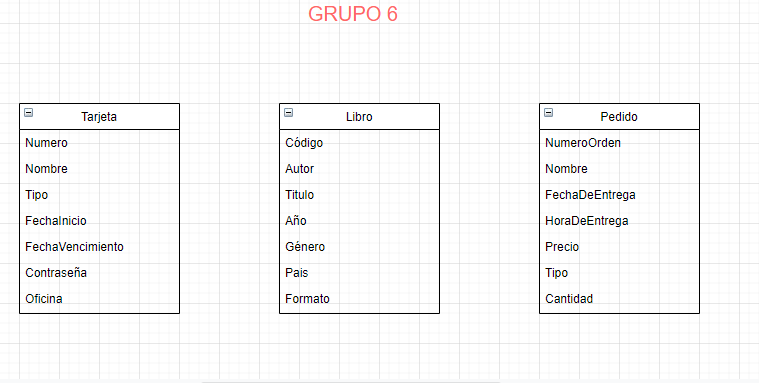
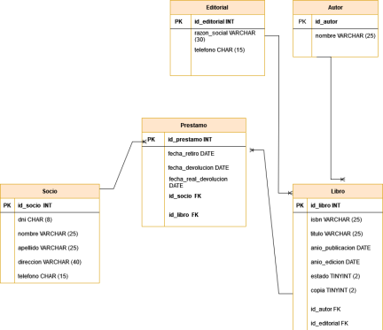
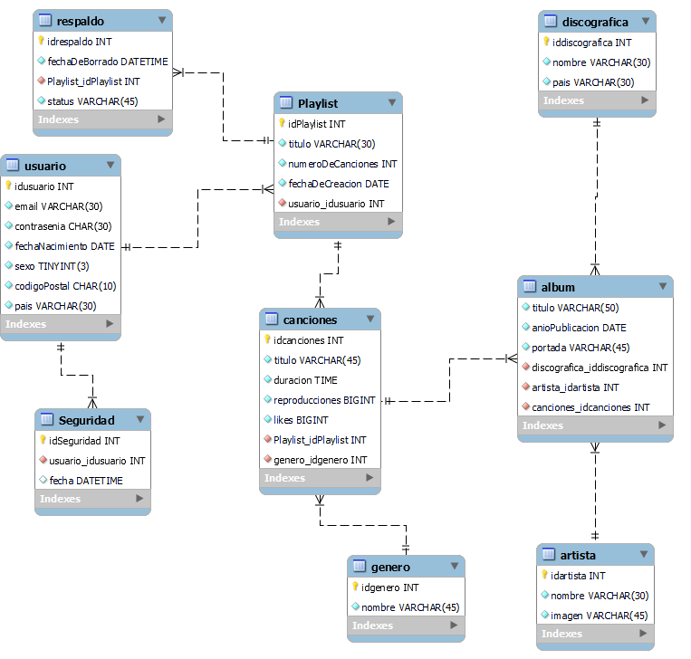

Sobre la materia
"Bases de Datos" - Esta es una materia enfocada en la enseñanza de un motor de base de datos relacionales; pues esa es la herramienta que permite implementar soluciones completas e integradas para la gestión de contenidos. La creación y el manejo de las bases de datos es indispensable en cualquier lenguaje de programación orientado al backend de los productos digitales
Proyectos de Bases de datos
Tablas de datos
Se definen entidades y atributos, tres tablas de ejemplos.
Entidades y atributos - Caso de una app de un Restaurante
Identificar entidades y atributos del caso.

Relaciones entre entidades - Caso biblioteca

Diagramas y relaciones con Workbench - Caso discográfica
Se identifican las entidades y se diagrama la base de datos para hacer ingenieria inversa, y crear una base de datos.
